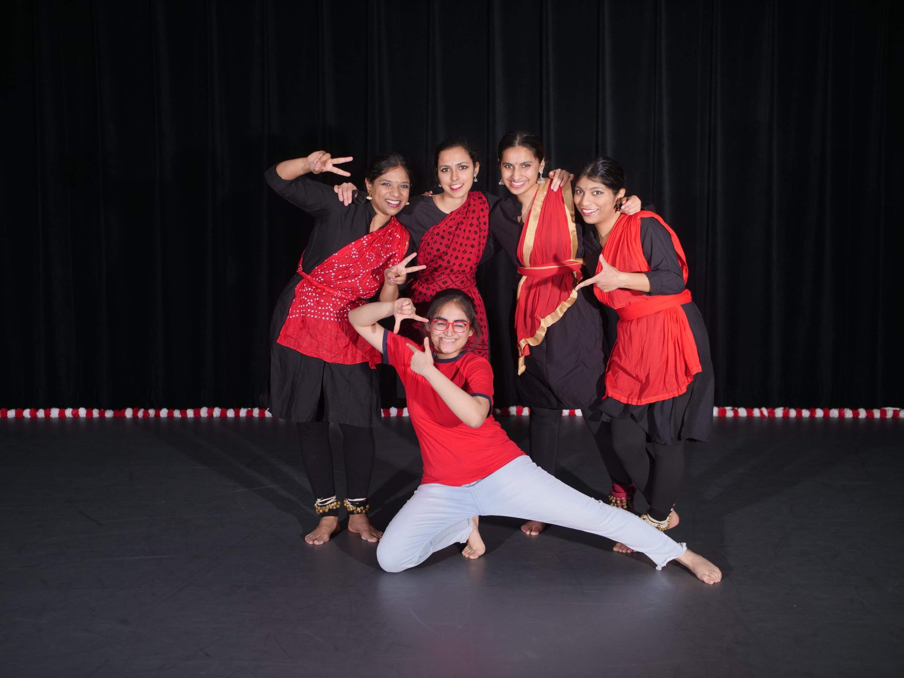

- The scorching summer heat being relieved by the hope of a thunderous downpour, song composed by Nobel Laureate Rabindranath Tagore, as a part of the Bengali new year with MIT South Asian Association of Students [DarunAgniBaneRe]
- A classical rendition of a bollywood song celebrating the arrival of monsoon [BarsoRe]
- "I saw a spark of fire. I placed it in a hollow in the forest..."-Tamil poet Bharathiyar [Agnikunjondru]
Indian Classical Dance
One of my favorite art forms is the Indian Classical Dance: Bharatnatyam.

Dances performed as a part of the Indian Classical Dance Club at MIT- MIT Nritya